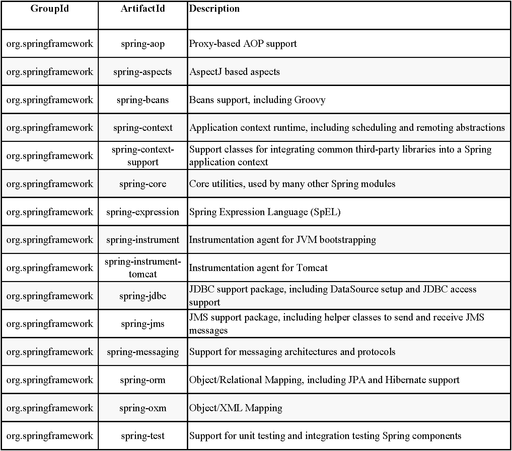

1、Modules
Spring 框架集成了20多个模块,这些模块按照各自的职责被分到Core Container(核心容器),Data Access/Integration(数据访问/集成),Web,AOP(Aspect Oriented Programming,面向切面编程),Instrumentation(工具),Messaging(消息),Test模块.如下图:
1.1 Core Container
Core Container包括5个模块：spring-core、spring-beans、spring-context、spring-context-support、spring-expression(Spring Expression Language)
1) spring-core 和 spring-beans模块提供了Spring框架的基本组成部分,包括IoC和依赖注入.
2) spring-context模块是在core和beans模块的基础之上建立的,(it is a means to access objects in a framework-style manner that is similar to a JNDI registry)它的作用是可以通过类似JNDI注册的方式来访问对象,即通过配置文件和对象进行关联.但是除了从core和beans继承过来的特性之外,它还额外增加了如支持国际化的文本消息、事件传递、资源加载、透明创建context(如一个Servelt容器),并且该模块还支持JavaEE的一些特性如EJB、JMX(Java Management Extension,Java管理扩展)、基础的远程处理.该模块中最重要的核心就是ApplicationContext接口.
3) spring-context-support模块对将caching(EhCache/Guava/JCache),mailing(JavaMail),scheduling(CommonJ/Quartz)和模块引擎(template engines)(FreeMarker/JasperReports/Velocity)这三个类库集成到Spring 应用上下文中,提供了支持.
4) spring-expression模块为在运行时为查询和操作一个对象提供了一种强大的表达式语言.它是一种标准表达语言(unified EL)的一种扩展,这种语言支持属性值的获取和设置、属性的分配、方法的调用、数组,集合,迭代器等的内容访问以及通过IoC和对象的名字获得对象.等等.
1.2 AOP and Instrumentation
1) spring-app模块中提供了一个可自定义的联盟标准化的面向切面编程的工具,比如,可以创建拦截器方法和切点对那些应该被独立划分的函数功能进行完全的解耦.就算使用源级元数据功能,你也可以将这些行为信息合并到你的代码中.
2) spring-aspects模块是一个独立模块,它集成了AspectJ框架.
3) spring-instrument模块提供了在中心应用服务所用到的类工具支持和类加载工具的支持.
spring-instrument-tomact模块则包含了Spring框架中的Tomact的代理工具.
1.3 Messaging
Spring Framework4中包含了spring-messaging模块,它是从Spring集成的项目如Message/MessageChannel/MessageHandler等等中提取出来的,这些被集成的项目是作为消息基础应用服务的一个基础.这么模块也包含了方法映射消息的注解的集合.
1.4 Data Access/Integration
数据访问/集成层包含了JDBC、ORM、OXM、JMS以及事务处理模块.
1) spring-jdbc模块提供了一个已去除繁琐冗长的JDBC代码以及对数据库提供商的标准错误代码的解析的JDBC层.
2) spring-tx模块通过类实现特殊的接口且是对于代码中所有的Java对象,提供了一个编程式和声明式编程的事务管理.
3) spring-orm模块集成了常用的对象关系映射APIs,包括JPA,JDO,Hibernate.使用该模块可以结合Spring提供的其他特征来使用所有的O/R映射框架.
4) spring-oxm模块提供了对Object/XML 映射的支持工具,如JAXB,Castor,XMLBeans,JiBX和XStream.
5) spring-jms模块（Java Messaging Service）包括了消息的产生和消息的处理,因为在Spring4.1中集成了spring-messaging模块.
1.4 Web
Web层包括spring-web,spring-webmvc,spring-websocket和spring-webmvc-portlet模块.
1) spring-web提供了面向web所有基本特征,如多文件上传功能,使用Servlet监听器完成对Ioc容器的初始化等,它也包括了一个HttP客户端和远程web访问.
2) spring-webmvc(Web-Servlet module)包括Spring MVC框架和REST web服务工具.Spring MVC框架对model代码,web窗体以及整合所有的Spring框架的其他特征实现了完全的分离.
3) spring-webmvc-portlet(Web-Portlet module)为在Portlet环境中和spring-webmvc模块框架功能的镜像中使用提供了MVC框架工具.
1.5 Test
The spring-test module supports the unit testing and integration testing of Spring components with JUnit or TestNG. It provides consistent loading of Spring ApplicationContexts and caching of those contexts. It also provides mock objects that you can use to test your code in isolation.

2、Spring Dependencies and Depending on Spring
2.1 Maven Dependency Management
1) 使用Maven管理,例如为了创建一个应用上下文和使用依赖注入则在配置文件中进行配置：
scope在运行时被公开,如果该应用不需要再次编译Spring APIs.
上述工作都是在Maven Central repository中进行的,所以为了使用Spring 的Maven仓库,需要在配置文件中指定具体的Maven仓库位置.
2) Maven依赖的“物料清单”: 有时候可能会由于配置不当,导致在所有的依赖库记载时版本不一致,为了解决这个问题,必须在配置文件中指定Maven的“BOM”,我们可以import spring_framework-bom到dependencyManagement中,以确保所有的Spring依赖库的版本都是一致的.
配置了BOM的好处就是在之后每次引用其他的依赖库时不需要再填写版本信息：
2.2 Gradle Dependency Management
若使用Gradle作为Spring的仓库,需要在配置文件中添加一个Url,
对应的你可以选择不同的类型：/release,/milestones或者/snapshot.配置完仓库,就可以声明依赖了.
2.3 Logging
Logging 在Spring中是一个非常重要的依赖库,也是仅有的一个托管依赖库,在Spring中所用托管依赖的Logging是JCL(Jakarta Commons Logging API),->Commons-logging
但是不幸的是在运行时,这个库会有问题,怎么关掉这个库呢？有两种方法：
1) 去除从spring-core模块的依赖(因为只有该模块才依赖于Commons-logging);
2) 使用一个空的jar库来代替Commons-logging(之后会重新使用SLF4J来作为Logging的库);
使用SLF4J替换spring原来的Logging,需要四个依赖库： the bridge, the SLF4J API, the binding to Log4J, and the Log4J implementation itself.